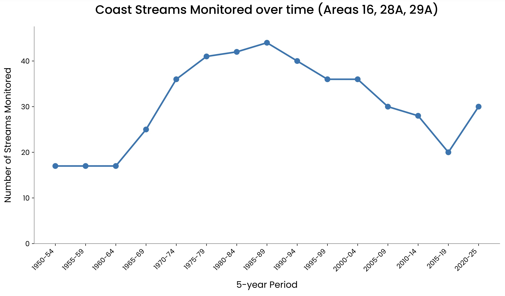
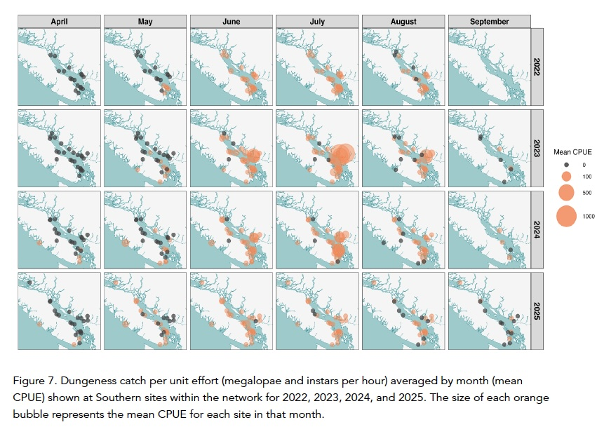
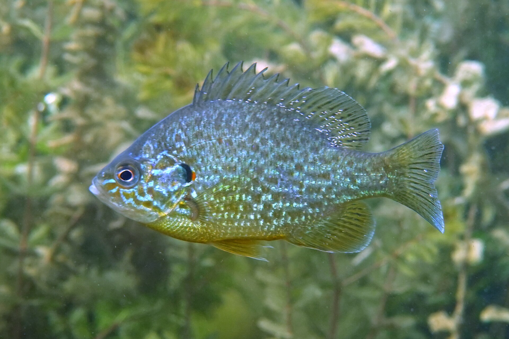
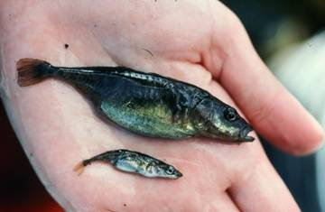
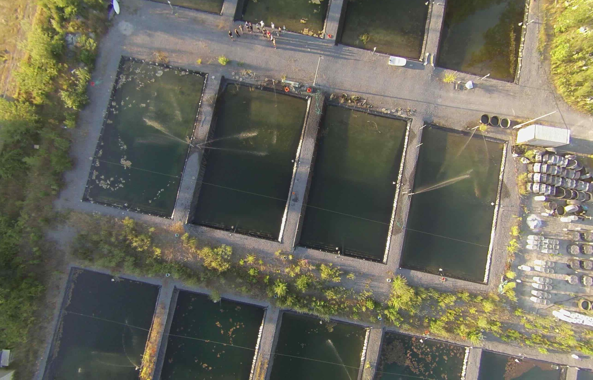
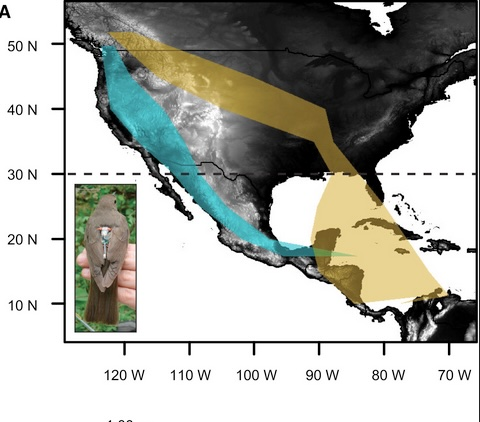

Monitoring increasingly fuels formal scientific research. This section will present a selection of interesting stories about biodiversity research on the Coast, and particularly those in which the monitoring programs of local non-profits have played or are playing a significant role. More to come!
Coast Monitoring Fuels Science
Monitoring for Fisheries, or for Fish?
First Nations communities in BC have observed and learned about salmon stocks for millennia, and have passed that knowledge from generation to generation. The federal government's version of stock assessment began in the 1920s as handwritten letters from field supervisors: qualitative descriptions of runs (for example, "good", "average", "well seeded") that slowly formalized over the decades into quantitative estimates, which were finally consolidated in 1995 into a single public archive at Fisheries and Oceans Canada (DFO): the New Salmon Escapement Database. Today it's the most comprehensive record of how many salmon return to spawn across B.C. and the Yukon. A new study demonstrates that this record-keeping effort has declined markedly over the recent decades.
In a recent paper led by Emma Atkinson of the University of Alberta, and including colleagues from the Pacific Salmon Foundation and Salmon Coast Field Station, the authors have traced monitoring effort across thousands of salmon populations from 1926 to 2023. The picture that emerges is a decades-long decline; "Almost two-thirds of historically monitored salmon populations have no reported estimates in 2014–2023—the worst decade for data since broadscale surveys began in the 1950s." Moreover, for at least three species, sampling effort closely tracks commercial catch value. As fisheries for particular species or regions shrank, or vanished, monitoring effort largely shrank with them. The researchers are careful to acknowledge that some of the apparent decline could reflect lags in getting data into the database, or ongoing surveys that never make it into the database. However, they argue that this decades-long association cannot be explained by these factors alone.
There is reason for concern. Counting salmon is not meant to be about supporting fisheries alone. Canada's Wild Salmon Policy set out to conserve the full diversity of wild salmon, organized into conservation units, genetically distinct populations that, once lost, are gone for good on any human timescale. Monitoring only the handful of large, commercially valuable runs can create a false sense of security. For example, estimates based on a few large populations may look fine even as smaller, unique, unmonitored populations disappear.
There has been an average decline of about 43 populations per year being monitored since 1986. Figure from Atkinson et al. 2025, Can. J. Fish. Aquat. Sci. 82: 1–18.
The paper closes with a five-part prescription for future monitoring of BC's salmon populations: redesign monitoring around tracking biodiversity rather than on supporting fisheries, fund it consistently rather than in one-off bursts, invest in emerging tools like eDNA, drones, and AI-assisted video counting, clean up and centralize the data that already exists, and build data-sharing practices that respect Indigenous Data Sovereignty alongside open-data principles (FAIR).
Local efforts are picking up much of the slack on the Coast.
Using the same data set as Atkinson et al., with the same caveats, monitoring of streams on the Sunshine Coast shows similar dramatic declines since the 1980s, from a peak of 44 streams in the late 1980s to 20 in the 2015–2019 period. This represents a decline of about 55%. However, even this should perhaps be viewed as an underestimate of the decline, because by 2018–2019, the shíshálh Nation, Sunshine Coast Streamkeepers, and Loon Foundation were already conducting the monitoring of several streams. Since the 2015–2019 period, there has been a substantial increase in the Coast streams being monitored (9 new streams), but this is entirely attributable to the work of the non-profits featured on this site and the shíshálh Nation. These recently added streams include a few that do not have a historical record of being monitored, including Colvin Creek, now monitored by the Sargeant Bay Society.
According to DFO's South Coast Salmon – Strait of Georgia Stock Assessment, by 2025 there were 29 streams monitored on the Coast between the Langdale area and the Jervis Inlet. About 25% of these are being monitored by DFO in collaboration with the shíshálh Nation, another 30% by the shíshálh Nation alone, and about 45% by the Coast non-profits featured on this page

Streams monitored over time on the Sunshine Coast. The data used by Atkinson et al. extends to 2023. For this figure, numbers from the DFO's South Coast Salmon – Strait of Georgia Stock Assessment extend the data to 2025.
Key Finding
Investment in counting Pacific salmon appears to have more closely tracked the fortunes of commercial fisheries than the needs of conservation, leaving four decades of accumulating blind spots in the data needed to conserve the genetic diversity of salmon and to detect and prevent the next potential collapse. Here on the Coast, where monitoring by DFO has also declined dramatically, much of it is being picked up by shíshálh Nation and the non-profits featured on this website. As noted by Atkinson and team, a great deal of research on stock declines and recoveries, as well as policy relies on these salmon counts.
Update: This spring, new DFO cuts to the stream monitoring programs have drawn media attention. There is a Global News clip here. This further emphasizes the value of the stream counts being done by local NGOs and Indigenous governments across BC.
Atkinson, E.M. et al. 2025. Monitoring for fisheries or for fish? Declines in monitoring of salmon spawners continue despite a conservation crisis. Can. J. Fish. Aquat. Sci. 82: 1–18.
Coast Monitoring Fuels Science
Counting Lice: Tracking a Tiny Threat to Wild Salmon
Sea lice, Lepeophtheirus salmonis, a salmon specialist, and Caligus clemensi, a generalist that also infects herring and stickleback, are marine ectoparasites that graze on the skin, muscle, and blood of their hosts. Neither survives in the freshwater where Pacific salmon spawn. Given that adults die soon after spawning, long before their offspring hatch and head to sea, there is limited opportunity for interaction between vulnerable juveniles and infected adults. Ecologists call this migratory allopatry, and historically it has kept lice loads on young salmon relatively low.
Open-net salmon farms remove that natural separation. Housing salmon in coastal waters year-round, farms can pick up lice from wild adults returning to spawn each fall, harbour and multiply them over winter, then pass them on to wild juveniles migrating past the following spring. Studies in British Columbia's Broughton Archipelago show lice loads on wild juvenile pink and chum salmon increasing significantly after they swim past farms, and declining in years when farms sit fallow. Similar patterns have been reported in Europe.
Canada announced in 2024 it would ban open-net salmon farming in BC by June 30, 2029, and sea lice transmission to wild salmon was explicitly cited as a reason, alongside disease and escapes, backed by peer-reviewed research linking farm-origin lice to wild salmon declines. However, there is still debate around the closures. About half of BC's 100 farms have already closed. Prior to the federal ban, other provincial and First Nations closures had occurred, including in 2022 on the Coast in shíshálh territory.
Understanding sea lice well enough to manage them means tracking infection at every relevant distance: on juvenile salmon close to their natal streams, near active farms, and near farms sitting fallow, and at distance from farms. Contrast among sites points to different pieces of the transmission puzzle. This kind of fine-grained monitoring is exactly what's been happening closer to home, in Pender Harbour.
For several years, Jenn Blancard of the Loon Foundation has been seine netting and enumerating juvenile salmon as well as counting the lice on them, and sharing the resulting data with DFO. Recently, on the advice of sea lice expert Prof. Martin Krkošek (University of Toronto and Salmon Coast Field Station), Jenn began distinguishing between the two lice species and their life stages in her counts, rather than tallying lice as one group. Distinguishing these species matters because Lepeophtheirus salmonis and Caligus clemensi and their stages differ in how much harm they do to a host.
In May, two of Krkošek's graduate students (Kyra Ford and Erik Curtis) made the 3.5-hour crossing of the Salish Sea by 21-foot skiff to Irvine's Landing, and trained Jenn's team in lice identification, first with a dockside seminar minutes after they'd tied up, then hands-on with real samples. The data Jenn collects on infection will now feed directly into Krkošek's ongoing research on lice, farms, and wild salmon.
Key Takeaway
Sea lice remain a real threat to wild salmon, and local monitoring, like the work happening in Pender Harbour, is helping build a finer-grained understanding by researchers. Monitoring programs like this will often benefit considerably with input from active researchers already working in the field.
University of Toronto graduate researchers Erik Curtis and Kyra Ford deliver a dockside seminar on sea lice and salmon at Irvines Landing. Their research centres on salmon parasites, including lice and lamprey.
iNaturalist started in 2008 as a master’s project at UC Berkeley, built by Ken-ichi Ueda, Nate Agrin and Jessica Kline. It was a small tool for sharing wildlife sightings. Over the next decade and a half it changed hands several times. It became a company in 2011, then joined the California Academy of Sciences in 2014, with National Geographic signing on as a partner in 2017. In 2023 it went independent as a nonprofit.
It also got big. By 2025 it held close to 300 million observations from more than four million users, covering hundreds of thousands of species.
Users can upload their photos and the app’s built-in AI suggests what it might be. Then other users look at it and agree or offer a correction. Some of them are amateur naturalists, and some are specialists. Once enough people agree, the observation is marked “Research Grade” and can be passed along to the Global Biodiversity Information Facility, where researchers can use it. Scientists might use these data to determine a species range and how it is changing, to determine flowering times, migration times, or even a species colour variation across its range. The sea star you photographed at low tide in Davis Bay sits in the same database as records for water striders in Sweden. According to iNaturalist there have been over 7000 scientific papers citing iNaturalist data. Mason et al. note that in 2022 alone they “identified 1410 articles that used iNaturalist data, averaging nearly four articles published per day.”
Retired physician and lifelong naturalist Rand Rudland has been central to building this local resource, filling in the region's record over the years with his own photographs consisting of about 15,000 observations of 1,700 species. Beyond his own observations, Rand has taken on teaching others how to use the platform with workshops and talks through local non-profit groups. To date there have been about 122,000 observations, of over 5000 species, by 3700 observers on this local site.
Key Takeaways
iNaturalist began in 2008 as a master’s project at UC Berkeley. It now holds hundreds of millions of observations and has fed into thousands of published studies.
On the Coast, that global resource has been made local by dedicated local naturalists like Rand Rudland, whose work building and teaching the platform locally connects Coast residents directly to the broader scientific enterprise.
As temperatures rise, mountain species are generally expected to move to higher, cooler elevations to survive, and many are already doing exactly that. Scientists have proposed three main ideas for how this plays out. The "escalator to extinction" suggests a species' range gradually creeps upslope until they simply run out of mountain. The "upslope lean" idea suggests species don't shift their whole range, but instead become more concentrated toward the upper end of their current distribution. The "persist-in-place" idea suggests many species simply stay put and adapt.
These ideas are usually tested by tracking whether a species is present or absent in a given area over time. But this misses something important: how many individuals are there? Counting actual numbers gives a clearer picture of whether a population is truly healthy or subtly shifting range before it disappears from an area entirely. A species that still shows up in surveys could already be in serious trouble if its numbers are falling fast.
Here is a recent local study of birds on the move, including in Tetrahedron Provincial Park, that considered both presence/absence and abundance.
This study, led by Ben Freeman, looked at breeding birds in the old-growth forests of the Pacific Northwest over three decades of warming. Ben was a post-doc at UBC at the time he conducted the study. He had come across some mountain bird surveys conducted by F. Louise Waterhouse in the early 1990s, and recognized that he could build on these to test the reigning hypotheses for climate change effects on mountain species.
Basically, surveys were conducted by walking trails, stopping at a series of set stations, and listening to calls to estimate species' presence and abundance. With these data you can estimate elevational range and abundances within those ranges for each species. This is roughly what Waterhouse did in the early 1990s, and Ben and his team repeated in 2023. Contrasting these datasets and comparing them to temperature records allows one to test hypotheses about range shifts associated with climate change, including the escalator to extinction idea.
The species included in the study were Brown Creeper, Chestnut-backed Chickadee, Hairy Woodpecker, Olive-sided Flycatcher, Pacific-slope Flycatcher, Red-breasted Nuthatch, Red-breasted Sapsucker, Sooty Grouse, American Robin, Pine Siskin, Townsend's Warbler, Red Crossbill, Steller's Jay, Vaux's Swift, Hermit Thrush, Varied Thrush, Canada Jay, American Three-toed Woodpecker, Golden-crowned Kinglet, Pacific Wren, Dark-eyed Junco, and Swainson's Thrush. The surveys were conducted at several sites on mountains north and west of Vancouver.
Here is a figure from their 2025 paper in Ecology illustrating some key hypotheses and their results:
Figure from Freeman et al. 2025, Ecology — illustrating key hypotheses and observed results for mountain bird abundance shifts in the Pacific Northwest.
Key Finding
While ranges were not generally shifting, birds' overall peak abundance zones have shifted upslope at roughly the same rate as temperatures have, and this pattern provides support for the "upslope lean" idea. At present, there is little evidence of species heading toward extinction via the escalator effect, with one clear exception, the Canada Jay, a high-elevation bird, which has declined significantly. Tracking abundance, rather than just presence/absence, will be important for spotting warning signs early enough to act.
Freeman, B.G. et al. 2025. Pacific Northwest birds have shifted their abundances upslope in response to 30 years of warming temperatures. Ecology, 106:e70193.
Coast Monitoring Fuels Science
Shining a Light on Dungeness Crab Larvae
The Sentinels of Change light trap network tracks the arrival of Dungeness crab larvae along the coast. Launched in 2022, this program connects scientists to resource managers and community based monitoring programs from Haida Gwaii down to Puget Sound. Sentinels of Change and Hakai have just released their 2025 Light Trap Network Report, which demonstrates the value of monitoring programs on the Coast.
Dungeness crab are both culturally and economically important. They've been important to coastal Indigenous life for thousands of years and are one of the most valuable fisheries in both Canada and the US. Understanding how their larvae disperse and survive is key to helping managers keep crab populations healthy as oceans change.
Two local sites, Pender Harbour and Gibsons, are included in this study courtesy of local monitoring programs run by the Loon Foundation and the BlueAct Marine Society.
2025 was the network's fourth year, with 29 sites participating overall. From mid-April through early fall 2025, community partners checked traps every two days, counting and photographing any Dungeness larvae they caught to track size and abundance. The network intends to explore how climate change affects young crabs, how crab populations are genetically connected across the coast, and whether light traps can help detect invasive European green crab.

Dungeness crab larvae from the Sentinels of Change Light Trap Network, 2025.
Takeaways.
The report states that 2025 was a low year for Dungeness crab larvae, with peak timing shifting earlier, from July to June, compared to previous years. Despite light catches, data quality improved thanks to strong partner commitment. With four full seasons now collected, the network is building a meaningful long-term dataset. Work is advancing on environmental modelling, population genetics, and climate linkages. In 2026, the network will expand monitoring, deepen analysis, and launch new research questions. Above all, the network's work continues to rely on community-based monitoring efforts, including those on the Sunshine Coast.
As oceans warm and ecosystems shift, the birds that depend on them appear to be shifting distributions in response and a new 20-year study of coastal waterbirds by de Zwaan et al. document significant shifts in distribution along BC's Pacific coast.
Researchers have recently tracked the winter occupancy of 57 waterbird species between 1999 and 2019. Overall, the data show some widespread declines, but with important regional differences.
The study relies on the work of a large group of citizen scientists. Since 1999, dozens of volunteers in BC, including a number within monitoring programs on the Sunshine Coast, have conducted monthly counts along 368 standardized shoreline routes from the Salish Sea to BC's northern coast. This citizen science program, the BC Coastal Waterbird Survey, has accumulated one of the richer long-term bird datasets on Canada's Pacific coast, and it's now fuelling science, including that of de Zwaan et al.
Change was pronounced here in the Salish Sea. Declines there were steep and broad, including most feeding groups (diving ducks, fish-eaters, shellfish-eaters). The causes likely include both warming waters and a suite of impacts associated with human activities including pollution from urban runoff, nutrient loading from rivers, and dense coastal development. These combine to degrade habitat for species that depend on cold, productive waters.
In contrast, on BC's North-Central coast, several species are actually maintaining numbers or increasing. The likely reason is that this area has maintained cold, less salty water that supports the prey species these birds depend on. In a warming world, these places may function as cold-water refugia.
The most consistent signal from these data is directional movement. On average, waterbirds are wintering farther north than they did 20 years ago. Cold-tolerant species are retreating poleward or pulling back into cool fjord habitats. Meanwhile, herbivores and warm-tolerant species appear to be expanding northward into the Salish Sea from farther south, to take advantage of milder winter conditions there.
The study also tackled an important conservation question: do protected areas actually help? They found evidence that newer marine protected areas do help: birds colonize them more readily and disappear from them less often.
Key Takeaways:
In the face of these shifting ranges, protecting habitats where birds are today is no longer sufficient. Canada has committed to protecting 30% of its coastal waters by 2030, but sits at around 15% today. The authors suggest that new protected areas, particularly along BC's North-Central coast, should target cold-water refugia and the corridors that shifting species now depend on.
de Zwaan et al. 2024. Occupancy trends of overwintering coastal waterbird communities reveal guild-specific patterns of redistribution and shifting reliance on existing protected areas. Global Change Biology 2024;30:e17178.
Research Story
How did Sunfish get into Trout and Colvin Lakes?
Many may have read the 2023 Coast Reporter story "Go fish: How fishers and scientists are racing to protect a world-famous species from invasives." The piece tells the story of the discovery of invasive pumpkinseed sunfish in Trout Lake, which are threatening and may have even led to the extinction of Trout Lake's population of the threespine stickleback. There will be more on this little fish, the stickleback, that has contributed so much to our understanding of the origin of species (Charles Darwin's "mystery of mysteries") later on this page.
The question does arise: how did the invasive sunfish get into Trout Lake? The answer suggested in the piece is that they were likely introduced deliberately around 2021. Perhaps they were accidentally introduced from a fisher's bait bucket, or perhaps intentionally for sport fishing. However, the piece also notes that sunfish have recently been found in the unconnected Colvin Lake at Sargeant Bay, where the presence of fishers seems unlikely.
One commonly invoked explanation for the movement of invasive fish across long distances to remote lakes is that fish eggs get stuck on the feathers or feet of waterbirds, which then transport them long distances. Even Darwin wrote about this potential phenomenon. However, recent surveys of the scientific literature have found no evidence directly supporting this idea. So how did the sunfish get into Colvin Lake?

Pumpkinseed sunfish by Lorenz Seebauer, Wikimedia Commons, licensed under http://creativecommons.org/licenses/by-nc/4.0/
Sargeant Bay Society streamkeeper, Dave Spicer, suggested that perhaps eggs of sunfish were consumed by birds in Trout Lake and then deposited in their faeces into Colvin Lake. At first pass, this seems even less likely than their being stuck to feet or feathers. These are delicate fish eggs (think caviar) passing through the gut of a vertebrate and surviving? However, a recent paper shows this is indeed possible.
Hungarian researchers, led by Ádám Lovas-Kiss, fed fertilized eggs of nine fish species to mallards and recovered viable embryos of several species from their droppings, with two species successfully hatching into larvae. The findings establish waterbird gut passage as a rare but plausible natural dispersal mechanism for fish eggs across isolated water bodies, independent of human introduction. Among the species whose eggs survived passage through the gut were pumpkinseed sunfish, though in this very small sample, none developed into larvae.
Key Finding
This new study suggests that fish eggs can indeed pass through a duck's digestive system and remain viable. This means that waterbirds such as ducks may be transporting invasive fish species, including pumpkinseed sunfish, to new lakes. We will probably never know how sunfish got into Trout or Colvin lakes, but this recent study suggests that a single human introduction may lead to further spread through the natural behaviour of ducks.
Lovas-Kiss et al. 2024. Bird-mediated endozoochory as a potential dispersal mechanism of bony fishes. Ecography 2024: e07124
Research Story
Stickleback and the Origin of Species on the Sunshine Coast
Local populations of this widespread little fish have transformed our understanding of the formation of new species. In the lakes and streams of the Coast, this small spiny fish has yielded some of science's most important insights into how new species arise. And decades of research on the Coast plays a prominent role in these discoveries.
Speciation, the process by which one species splits into two descendant species, is notoriously difficult to study. It typically unfolds over a few million years, leaving scientists trying to reconstruct ancient events from fossils and genetic clues. Moreover, it is typically thought that a geographic barrier is necessary to isolate the populations and allow them to diverge and speciate. But in some lakes on the Coast sticklebacks appear to have speciated without a complete barrier and in a remarkably short period of time.

Stickleback species pair from Paxton Lake, British Columbia. Gravid benthic top, gravid limnetic bottom. Photo by Todd Hatfield.
After the last Ice Age, freed from the immense weight of ice sheets, rising land isolated populations of marine sticklebacks into lakes. In several of these lakes (Paxton, Priest, Enos and Hadley) something distinct occurred. Rather than resulting in a single freshwater adapted form in each lake, two distinct types evolved from a single ancestor: an inshore form known as the benthic, and an open-water form known as the limnetic. These two species found living side by side in the same lake, have become so specialised in their body shapes, behaviours, and resource use that they rarely interbreed. Similar divergence in body form, behaviour, resource use and even genetics, appears repeatedly across separate lakes. This and the recency of the divergence has allowed researchers to study, both by observation and experiment, the processes that underlie speciation itself. These insights are shedding light on what Darwin referred to as "the mystery of mysteries".

The UBC Experimental Ponds where researchers in Prof. Dolph Schluter's group study the processes involved in the evolution of new species. Photo by Dolph Schluter.
One of the main goals of these studies is to understand what is special about these few post-glacial lakes that have facilitated the evolution of two types, rather than one, which is more typical in nearby lakes. It turns out that rather precise ecological conditions are required, an understanding of which helps researchers to understand the process of speciation itself. However, it also means that ecological disturbance can lead to the collapse of the species pair into just one. This is exactly what happened to the Enos Lake populations on Vancouver Island with the introduction of signal crayfish. At Hadley Lake on Lasqueti Island, the introduction of brown bullhead catfish resulted in the extinction of both populations.
This left just two known populations, Paxton Lake and Priest Lake (a chain of 3 lakes) on Texada Island, putting at risk one of evolution's great stories. Thankfully, in 2007, a new species pair was found in the previously unexplored Little Quarry Lake on nearby Nelson Island. Involved in that important discovery, and the resulting publication, was Michael Jackson, the long serving past Executive Director of the Loon Foundation.
Takeaways:
Research on the Sunshine Coast has made important contributions to our understanding of biodiversity. The species pairs have become known, worldwide. Insights from study of the Coast stickleback comprise some of the most significant contributions to our understanding of one of evolution's greatest mysteries — the origin of species. Finally, Coast non-profits and their members have been closely involved in this research.
Gow et al., 2008. Ecological predictions lead to the discovery of a benthic–limnetic sympatric species pair of threespine stickleback in Little Quarry Lake, British Columbia. Can J. Zool. 86: 564–571.
Coast Monitoring Fuels Science
Mapping Pacific Sand Lance Spawning Habitat in the Salish Sea
Here in the Salish Sea, a small, slender fish contributes much to the marine food web. Pacific sand lance are important to the diets of salmon, seabirds, humpback whales, and the critically endangered southern resident killer whales. Between spring and fall, sand lance make up a large portion of prey consumed by the Chinook salmon, which in turn are relied upon by resident killer whales. Although an important component of the food chain, until recently knowledge of their spawning habitats was limited here in the Pacific northwest, which in turn limits managers' informed conservation decisions.
Lacking a swim bladder, they bury into coarse sands to rest, hide from predators, as well as for much of the winter in a kind of dormancy. In the winter months, they spawn in these sands of shallow water habitats, laying sticky eggs that attach to sand grains and incubate for one to three months before hatching. The beaches where this happens are quite specific and consistently used.
Citizen Science Fuels Habitat Modelling
A recent study by Huard et al. maps and characterizes these spawning habitats. Over nearly two decades, community scientists, First Nations members, independent biologists, and Fisheries and Oceans Canada conducted more than 1,000 intertidal surveys along beaches across the Canadian Salish Sea. Sand lance eggs are detected in sand samples examined under dissecting microscopes. By 2020, eggs had been detected on more than 90 beaches. Using this dataset and a modelling approach called MaxEnt, which is well suited to the kind of presence-only data that community science generates, researchers identified the environmental conditions that were associated with suitable spawning habitat. These characteristics were then used to determine the extent and distribution of suitable habitats in the Canadian Salish Sea.
Sand lance habitat suitability modelling study area within the Salish Sea. Triangles are where sand lance eggs have been observed. From Huard, J.R. et al., 2022.
What is a Suitable Habitat for Sand Lance Spawning
Suitable intertidal spawning habitat turns out to be scarce. The model estimates that only about 5.4% of the intertidal zone in the Canadian Salish Sea has a moderate to high likelihood of providing the conditions sand lance need. The characteristics of these habitats included proximity to estuaries and beach slope. Both of these were thought to play a role in supplying and sorting the sands into appropriate sizes for spawning.
They estimate that only about 8.5% of this predicted habitat currently falls within a protected area. Sand lance show strong site fidelity, returning year after year to the same patches of sediment. This site fidelity to a limited number of habitats makes them especially vulnerable to habitat loss associated with development, including shoreline armouring, dock installation, and other features of coastal development. For example, current Canadian law permits armouring up to the mean high-tide line, leaving intertidal spawning habitat with limited legal protection.
The authors describe the model they developed as a "living process", which they intend to refine as survey coverage expands and new approaches to detecting sand lance like environmental DNA become available. Nevertheless, refining this model and its predictions will continue to depend upon the citizen scientists willing to collect and examine beach samples looking for the eggs of sand lance. On the Coast, this will include a number of non-profits and their volunteers currently engaged in monitoring of these forage fish.
Key Finding
A very small fraction of the Canadian Salish Sea's intertidal zone is predicted to offer suitable spawning habitat for Pacific sand lance, a key forage fish supporting a food chain extending to orca. Only a small fraction of that fraction of suitable habitat is currently protected. This model of Huard et al., built on nearly two decades of citizen science effort, can now be used to guide marine conservation planning across BC's Salish Sea.
Huard, J.R. et al. 2022. Predictive habitat modelling of Pacific sand lance (Ammodytes personatus) spawning habitat in the Canadian Salish Sea. Can. J. Fish. Aquat. Sci. 79: 1681–1696
Research Story
Two Roads South: The Divided Migration of Swainson's Thrushes
The Swainson's Thrush is a small, spotted songbird that breeds across the boreal forests of North America and winters in Central and South America. Along the coast mountains of British Columbia, a coastal form and an inland form meet and interbreed in a narrow hybrid zone. The coastal form breeds here on the Sunshine Coast. Based on band recoveries and genetics, UBC scientists suspected that these neighbouring populations might differ in their migration routes and overwintering habitats.
To put the idea to a more direct test, Kira Delmore and Darren Irwin attached light-level geolocators to thrushes caught on both sides of the hybrid zone. Among these tagged coastal birds were 10 from the Sunshine Coast. These small devices record daily light patterns that can be translated into approximate locations, enabling tracking of individual birds through a complete annual cycle. The researchers found clear differences in both migratory routes and wintering zones of thrushes from either side of the hybrid zone.
Coastal Swainson's Thrushes flew south along the Pacific corridor, wintering in Mexico, Guatemala, and Honduras. Many of these birds did not settle in one location for the non-breeding season but moved between two or more wintering sites, suggesting that their winter behaviour is more flexible and complex than previously appreciated. In contrast, inland birds crossed the Rocky Mountains, moved through central North America, and continued south all the way to Colombia and Venezuela. Their routes to and from the wintering zone often formed a loop: crossing the Gulf of Mexico heading south in autumn, then returning by a different path in spring. These migration routes result in the two groups not only wintering in different regions but traveling through different parts of the continent in each season.

Polygons show routes taken by pure allopatric coastal (blue) and inland (yellow) thrushes tracked in fall. From Delmore et al., 2016.
The findings shed light on how migratory behaviour may contribute to keeping the two groups separate. Neighbouring populations traveling along different routes and overwintering thousands of kilometres apart have few opportunities to interact outside the breeding season. Moreover, differing ecological conditions along those routes may favour biological differences between groups over time.
There are some implications for conservation. Protecting the forests where these birds nest may not be enough. Swainson's Thrush have migratory routes, stopover sites, and wintering areas spread across several countries, and disrupting any of these may affect populations far to the north. More generally, for migratory songbirds crossing multiple borders, effective conservation must consider habitats used over the full annual cycle.
Updates: More recent work has shown that some hybrids tend to take an intermediate migratory route to the coastal and inland forms. And in another recent study by the same group, they have been able to identify genetic differences between the two forms that are clustered on a single chromosome and suggest a gene package for migration.
Key Finding
This study confirmed a migratory divide between inland and coastal Swainson's Thrushes breeding near the hybrid zone in British Columbia. Coastal birds, including those residing on the Sunshine Coast, travel south along the Pacific corridor to winter in Mexico and Central America, whereas inland birds take a longer route through the continental interior to South America. The routes diverge to such a degree that populations that are neighbours during the breeding season have little or no contact for the rest of the year, with implications for their evolution, ecology, and conservation.
Delmore et al., 2012. Dramatic intraspecific differences in migratory routes, stopover sites and wintering areas, revealed using light-level geolocators. Proc. R. Soc. B 279: 4582–4589
Delmore and Irwin, 2014. Hybrid songbirds employ intermediate routes in a migratory divide. Ecology Letters 17: 1211–1218.
Delmore et al., 2016. The genetics of seasonal migration and plumage color. Current Biology 26: 2167–2173.
Coast Monitoring Fuels Science
Citizen Science at Hotel Lake: Tracing the Diet of an Invasive Jellyfish
In summer, as the water in Hotel Lake warms past 21°C, thousands of pale, coin-sized jellyfish drift through the shallows. The jellyfish, Craspedacusta sowerbii, is native to the Yangtze River Valley but has now spread to lakes on every continent except Antarctica, perhaps hitching rides on boat hulls and the feet of waterfowl. In Hotel Lake, the first sightings date back to 2001, but for years little was known about what these invasive jellyfish might be doing to the local food web.
Thanks to a remarkable partnership between UBC researchers and a small crew of local volunteers in the Hotel Lake Advisory Association, we are starting to get a better understanding of their role in the food web. This close collaboration between a local non-profit and university researchers is described in engaging detail here and here in a Coast Reporter story. Below, a new portion of that work is described.
In 2023, Dr. Florian Lüskow and Professor Evgeny Pakhomov of UBC trained six Hotel Lake residents to collect jellyfish samples and lake data on a recurring schedule, work that has since grown into the Hotel Lake Stewards, a group now nine volunteers strong and operating year-round. Their samples have fed directly into new UBC graduate research, including a 2026 thesis by Johanna Marshall aimed at determining the diet of these invasive jellyfish, and therefore their potential impacts on the lake ecosystem.
Using stable isotope analysis, a technique that traces feeding relationships by measuring how carbon and nitrogen ratios shift as they move up the food chain, Marshall compared jellyfish tissue in 2025 to tissue from zooplankton (a food source), competing stickleback, and larval midges. The jellyfish, as expected, were eating zooplankton like water fleas and copepods. But they were also feeding on microzooplankton and fine particles of algae and organic matter, representing a broader diet than either the fish or the midges. That difference may facilitate the coexistence of these jellyfish with their potential competitors.
A companion research poster, presented in Cork, Ireland this July by UBC's Dana Halay, suggests that in high-density years, jellyfish may significantly reduce zooplankton numbers and alter their relative composition. These changes in composition may reach both lower and higher trophic levels, including more phytoplankton and hence a greener lake, and reduced fish production, including cutthroat trout.
Key Takeaways
None of this research would happen without the collaborative work of citizen scientists. What began in 2023 as six trained volunteers has grown into the Hotel Lake Stewards, a year-round program that acts as a research partner to UBC scientists.
That kind of sustained local commitment is one way that citizen science can enable new research. It is also a model the Hotel Lake Advisory Association and the Hotel Lake Stewards have proven particularly good at: pairing local volunteers' observations with the expertise of researchers. With this, questions which might otherwise sit unanswered instead turn into published science.
Marshall, J.M. 2026. Trophic ecology of the invasive freshwater jellyfish Craspedacusta sowerbii, revealed through stable isotope analysis. University of British Columbia.
Research Story
Tracking Oystercatchers Reveals Habitat Choices That Trade Off Foraging & Avoiding Predators
Black oystercatchers, the orange-billed shorebirds of our rocky shorelines, are considered an indicator of a healthy intertidal zone. They feed on large invertebrates, including mussels, limpets and clams. To manage or support their populations requires understanding their habitat use, yet, almost all previous information on habitat use comes from breeding-season studies, when territorial pairs are focused on protecting young and are incidentally easy to find and watch. Much less is known about what oystercatchers do the rest of the year, or how their needs change over a single day or a tide cycle.
A 2023 study led by Lena Ware and colleagues from Simon Fraser University and Environment and Climate Change Canada followed these birds through the seasons. The team fitted 20 oystercatchers from four BC regions, including our Sunshine Coast, with solar-powered satellite tags to track their habitat use over the course of a year. A 2024 companion study by Rankin and colleagues checked whether the tags affected survival, and found no evidence that tagged birds died at higher rates than colour-banded control birds.
The results suggest birds are weighing safety from predators against better feeding. Oystercatchers strongly favoured small, treeless rocky islets and avoided shorelines with tree cover, likely because trees can conceal eagles and other predators. That preference held for most times of day and season. It was strongest at high tide and after dark, when the birds are most exposed. Preferences tied to foraging, like shorelines near freshwater outflows and areas with more intertidal habitat, showed up mainly outside the breeding season, once there was no nest to defend, and during the day at low tide, when feeding is best.
Oystercatchers are thought of as rocky-shore specialists, so it was unexpected to see them making repeated, targeted use of stream mouths, particularly ones with gravel bottoms and wide intertidal flats. The authors suspect dense clam beds there may play a bigger part in the birds' diet than previously thought.
Home range size varied enormously by region, and Sunshine Coast birds had by far the largest ranges. The authors suggest that greater human disturbance along our stretch of coast may mean birds here have to travel further to find safe, productive habitat.
Key Finding
Black oystercatchers balance predation risk against feeding opportunities, and that balance shifts with season, time of day and tide. Protecting them means looking after both safe, treeless islets and productive freshwater outflows.
Ware, L., Hipfner, J.M., & Green, D.J. 2023. Satellite telemetry reveals habitat selection decisions by black oystercatchers across seasonal, diel, and tidal cycles. Ecology and Evolution, 13: e9957.
Rankin, C.M., Ware, L., Robinson, B.H., Esler, D., Coletti, H., Maftei, M., Hipfner, J.M., & Green, D.J. 2024. Evaluating effects of tracking device attachment methods on Black Oystercatchers Haematopus bachmani. Wader Study, 131(3): 204–213.